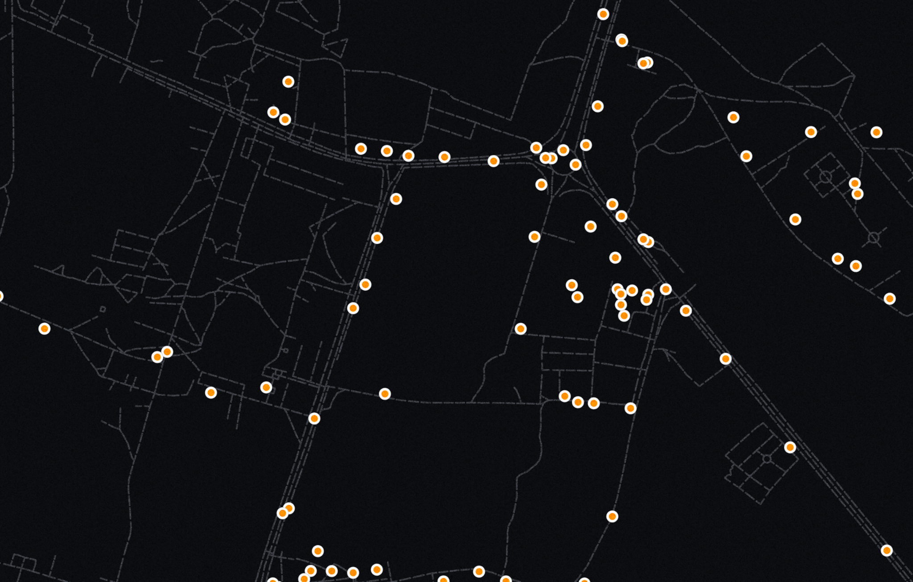
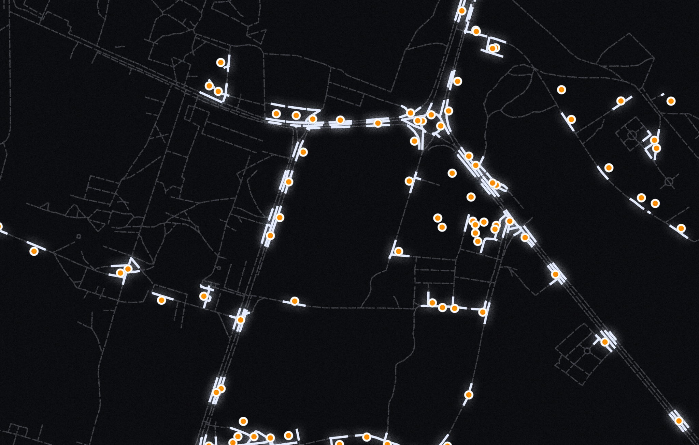
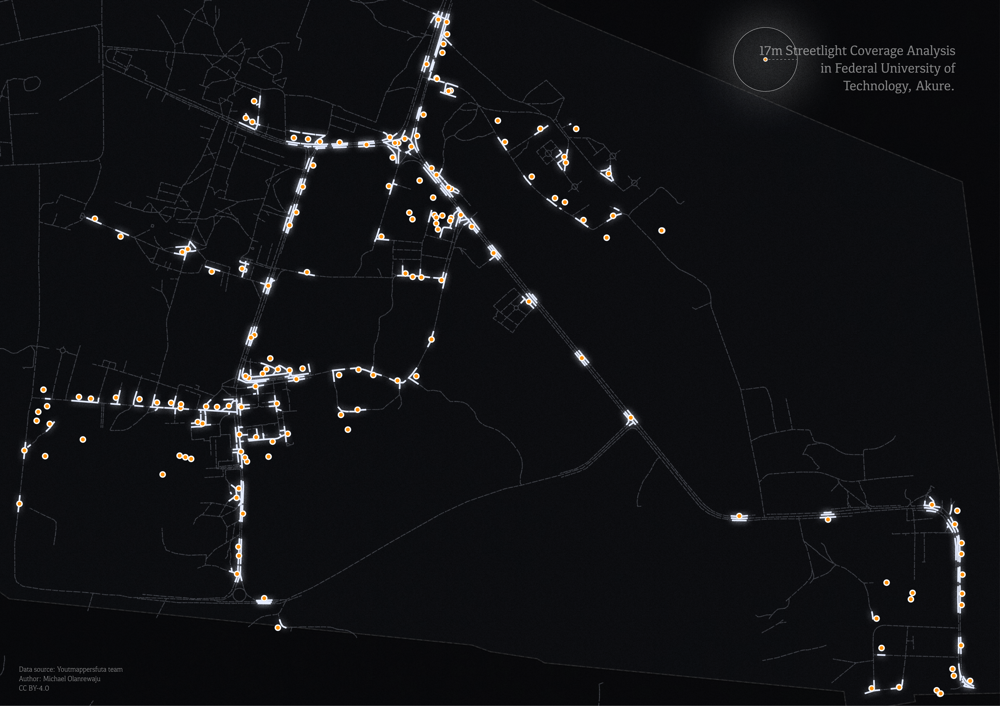

Light Campus: Federal University of technology, Akure, Nigeria
Mapping Streetlight Accessibility and Electricity Gaps Around FUTA.
Access to reliable electricity and functional street lighting is an important part of campus accessibility, safety, and everyday mobility. In 2024, a group of young mappers set out to document the electricity situation around the Federal University of Technology, Akure (FUTA), with a focus on streetlights and dark areas within the campus environment. The project responded to growing concerns from students who often move across campus between classes and their homes, especially at night, when lighting conditions directly affect safety and ease of movement.
Before then, FUTA was known for enjoying a relatively steady power supply, often ranging between 22 and 24 hours of electricity daily. However, a statement released by the university in late 2023 indicated a reduction in electricity availability to about 8 to 10 hours per day. This change made it necessary to better understand how reduced power supply was affecting streetlight performance and the visibility of roads and other campus spaces. These streetlights are especially important, as many students use them as places to study when there is no power in their hostels or classrooms.

Why the Project
Streetlight mapping was therefore used as a practical tool to identify black and light zones across the campus. The project aimed to assess and categorise streetlights based on their working condition and power source, identify clusters of damaged or non-functional streetlights for targeted maintenance, locate old streetlight removals for better organisation along roads, and map dark regions on campus, especially road networks. It also sought to provide university authorities with a decision map showing areas that require urgent repairs and upgrades.

Data Processing and Map Design
The collected data were cleaned and validated by the Youthmappersfuta team using QGIS. Several geoprocessing operations, including clipping, filtering, and buffering, were performed to extract the areas illuminated within a 17-meter radius along the roads. For the map design, the processed data were exported from QGIS into illustrator as SVG layers, allowing each layer to be styled individually. A dark theme was applied to improve visual contrast and clearly communicate the areas effectively covered by streetlights. The final map highlights the spatial extent of streetlight coverage across the campus and presents the lit and unlit areas in a visually engaging format.

 Street Pole
Street Pole
 Light road
Light road
 Dark road
Dark road
Final Note
This project is important because it helps reveal the relationship between electricity supply, streetlight coverage, and campus accessibility at FUTA. By identifying dark road sections and non-functional streetlights, the map provides useful evidence for improving safety, supporting student movement at night, and guiding future maintenance decisions. It also shows how student-led mapping can turn local observations into practical information for planning and action.
Credits
Source: YouthMappersFUTA | Design: Michael Olanrewaju | CC BY 4.0